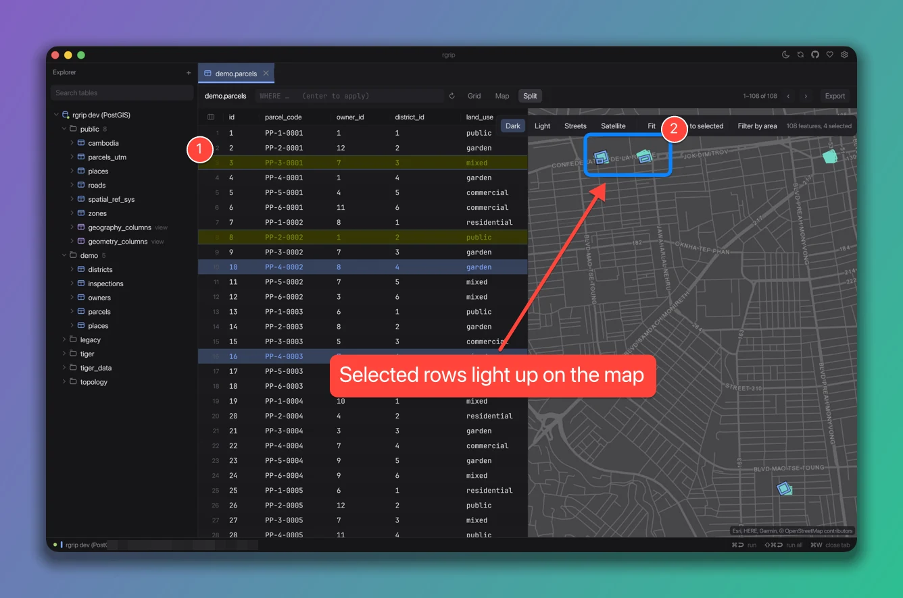
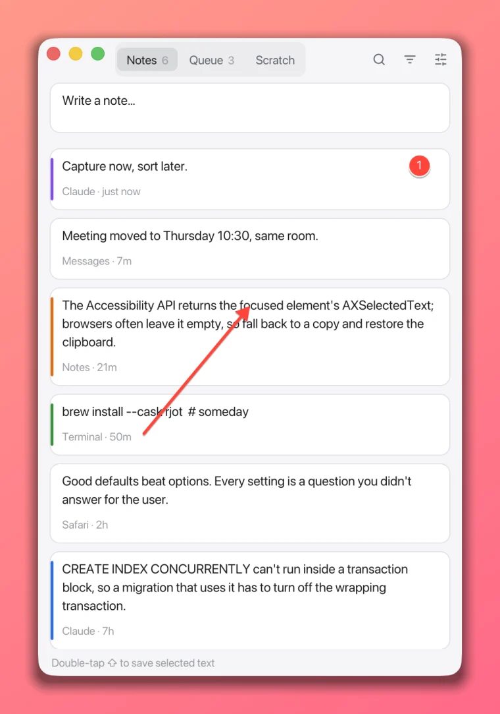
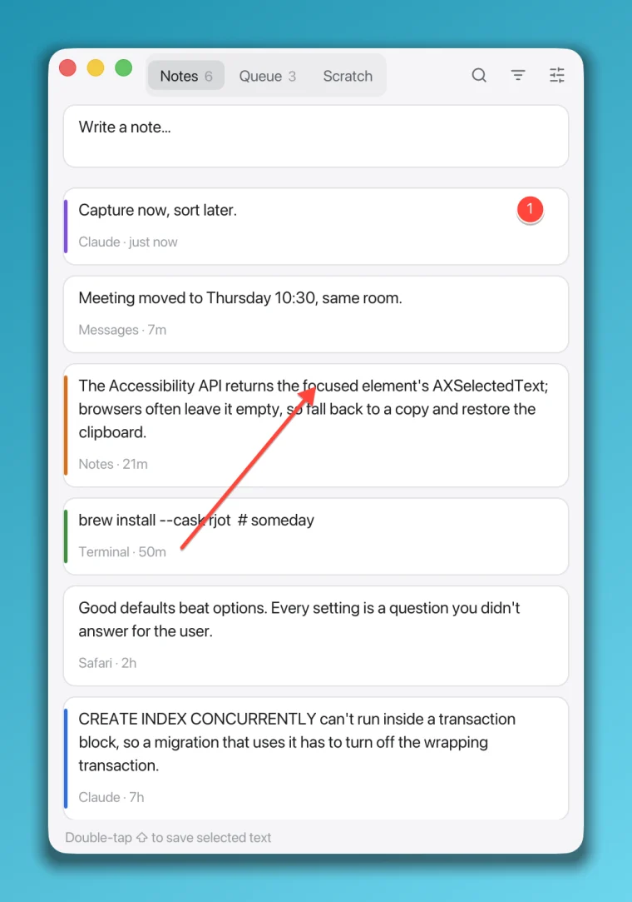
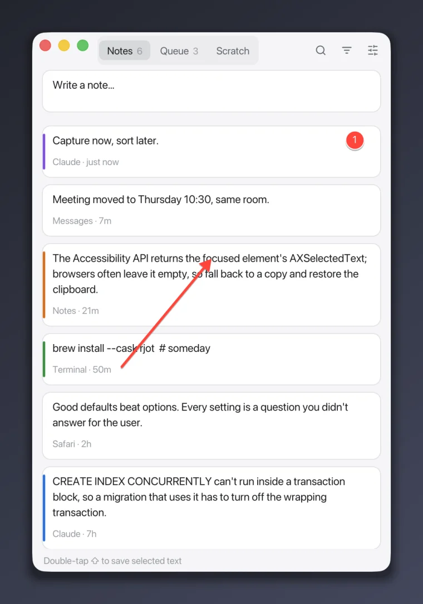
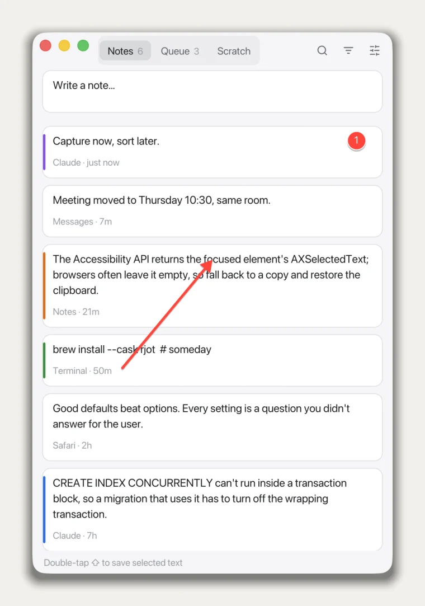
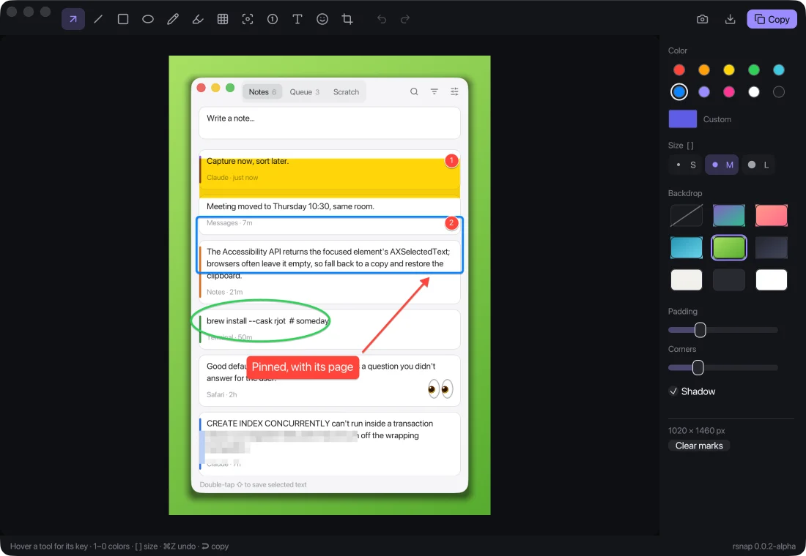

Snap it. Frame it.
Paste it.
Press ⌥⇧S, drag over anything, and rsnap opens a small editor. Put it on a backdrop, point at what matters, hide what doesn't, and ↩ puts the finished image on your clipboard.
v0.0.2-alpha · macOS 11+, Apple silicon · 5.9 MB · free, MIT

Twelve tools, one key each.
Pick a tool, drag or click. Ten colors on 1 to 0, or any color you like; three sizes on [ and ]. Everything undoes with ⌘Z.
- ArrowADrag from where to where.
- LineLA plain straight line.
- BoxRA rounded outline around the thing.
- EllipseOCircle it, like on paper.
- PenPFreehand, smoothed as you draw.
- HighlightHA real highlighter: text under it stays dark.
- RedactBPixelates emails, tokens and names for good.
- SpotlightFDims everything except the part that matters.
- StepsNNumbered markers that count up as you click.
- TextTLabels on a colored pill. Khmer is shaped properly: ចុចទីនេះ
- StickerEClick to drop an emoji: 👉 ✅ ⚠️ 🐛, or any you type.
- CropCDrag the part to keep.
On a backdrop, or not.
Five gradients, three plain colors, or none. Padding, rounded corners and a soft shadow are sliders. rsnap remembers what you like.




What you see is what you paste.
The editor shows the real render, the same pixels that land on your clipboard.

It stays on your Mac.
One permission, no account, no upload.
- Needs
- Screen Recording, so macOS lets it see what you capture. Not Accessibility: the shortcut is a plain system hotkey.
- Keeps
- Nothing, unless you save. Shots go to your clipboard, or to a PNG you name.
- Sends
- Nothing on its own. It asks GitHub for a newer version only when you click the version number.
- Runs on
- macOS 11 or later, Apple silicon
- Weighs
- 5.9 MB zipped, one native binary (Rust and egui)
- License
- MIT, source on GitHub
Three steps.
- 1
Download
Unzip it and move rsnap.app to Applications.
- 2
Open it once
It isn't notarized yet: right-click rsnap.app and choose Open, or run
xattr -dr com.apple..quarantine /Applications/ rsnap.app - 3
Press ⌥⇧S
Allow Screen Recording when macOS asks, and capture away. Updates install from inside the app.
Free and open source · v0.0.2-alpha · build from source